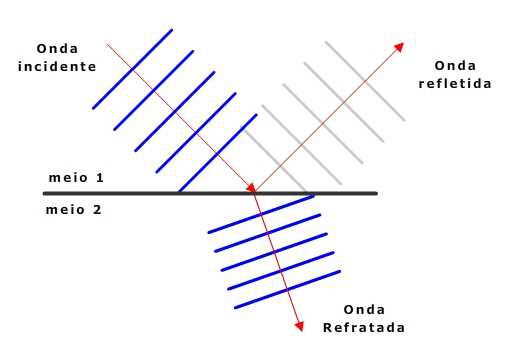
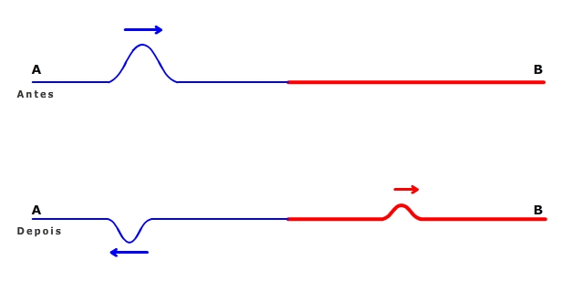
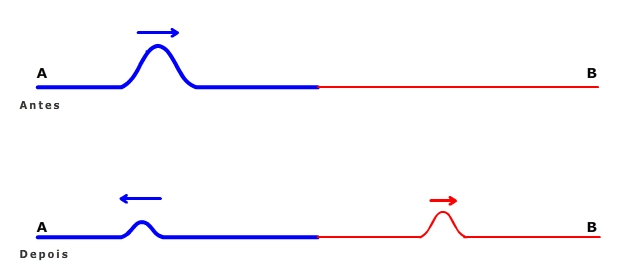
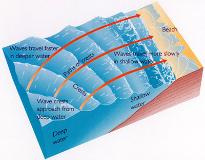
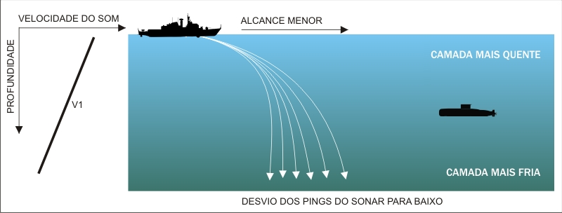
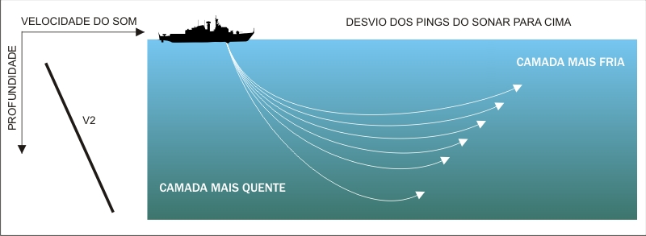

Já estudamos que a velocidade de uma onda depende das características do meio no qual ela se propaga. Se essas características mudam, a velocidade de propagação da onda muda. Por exemplo, quando uma onda sonora se propaga no ar, entre camadas que estão a diferentes de temperaturas, sua velocidade é variável.
O fenômeno onde uma onda passa de um meio para outro, sofrendo variação de velocidade, é chamado de refração.
Vamos estudar inicialmente o caso mais simples, onde uma série de ondas planas incide sobre a superfície de separação entre dois meio, tal que esse conjunto de frentes de ondas se move em uma direção perpendicular a essa referida superfície.
Analisando os diferentes modos nessa animação, podemos observar que:
Vamos considerar agora que essa série de ondas incida sobre uma superfície de separação entre dois meios diferentes, mas se propagando em uma direção que não é perpendicular à referida superfície. Para ilustrar esse fato vamos marcar "pontos" nas frentes de onda e alterar a velocidade desses pontos quando passarem de uma região para outra.
Temos três situações possíveis: na primeira, a onda passa para um meio onde a velocidade é menor, na segunda a onda passa para um meio onde a velocidade é maior, e na terceira, os meios são iguais e a velocidade é a mesma.
Importante ressaltar que quando ocorre refração, parte da energia da onda é refletida. Assim, quando ocorre refração, ocorre também reflexão.
A ilustração abaixo mostra um pulso se propagando em uma corda em direção a outra corda, de maior densidade linear. Observe que ocorre tanto a refração como a reflexão. Nesse caso, como a segunda corda tem maior densidade linear, o pulso refletido sofre inversão de fase. Além disso, a maior parte da energia da onda é refletida, e uma menor parte é refratada.
Caso o pulso se propague de uma corda de maior densidade linear para um de menor densidade linear, a situação será a seguinte:
A imagem abaixo ilustra o processo de refração das ondas oceânicas, que, em função da mudança de profundidade (que equivalem a uma mudança nas características do meio no qual as ondas se propagam), sofrem mudança na direção de sua propagação.
Acabamos de ver que quando uma onda se aproxima da praia, sua velocidade diminui. Mas a força de coesão entre as moléculas de um líquido não tão forte quanto em um sólido. Então, as molécula de água da parte da onda próxima ao fundo diminuem de velocidade mais rapidamente que as moléculas que estão na crista. Por esse motivo, suficientemente perto da praia, a velocidade da base da onda é menor que a velocidade da crista da onda, produzindo então o fenômeno da "rebentação".
Quando um som se propaga na água, por camadas que estão em diferentes temperaturas, ele também sofre refração. Nesse caso, o submarino está "invisível" para o navio, pois o sonar deste não é capaz de detectá-lo.
Observe agora uma situação inversa, onde o som se propaga da camada mais fria para a camada mais quente. Esse tipo de desvio, onde a onda "retorna" ao meio incidente, é chamado de "reflexão interna total".
